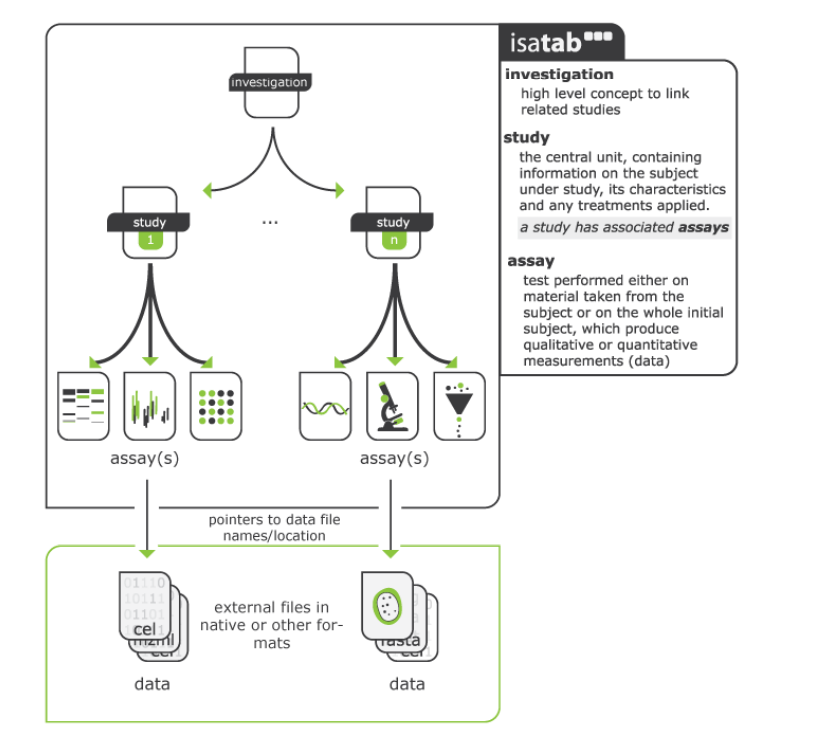
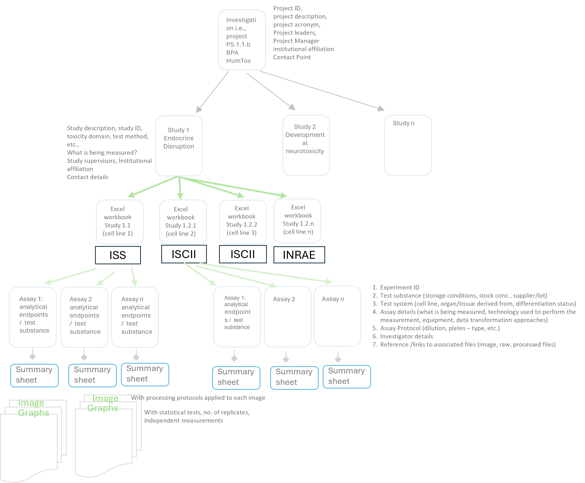

2 Overall structure of the excel workbook
The workbook is based on the Investigation/Study/Assay (ISA) Metadata Framework (see Figure 2.1), a well-recognised hierarchal framework with a set of community specifications to support provision of “rich descriptions of experimental metadata (i.e., sample characteristics, technology and measurement types, sample-to-data relationships) so that the resulting data and discoveries are reproducible and reusable”.1 The ISA framework is used in reporting data generated from experiments in the life sciences and environmental fields, e.g., Harvard Medical School LINCS Database, MetaboLights. In addition to following the ISA approach for experimental metadata, the excel workbook also contains additional fields in each of the files (investigation, study, assay) to fulfil PARC’s ambitions of “increased re(use) of scientific and regulatory data” and “one substance = one assessment”.

Mapping ISA to the PARC context:
The Investigation module will contain metadata of a particular project within WP5 and will contain all the information needed to understand the overall goals of a project, the project context, the people leading the project, and outputs or associated publications (of data – deposited in repositories, journal articles, PARC deliverable(s) in which the data is reported etc.)
The Study module is a unit of research which supports the overall project goal. The provenance of the test system (i.e., details of cell lines), test substances/materials and exposure duration, including names of researchers involved in performing the experiments are collected in this sheet. Both Investigation and Study have contact person names, their roles, and affiliation assigned as this is considered essential provenance information. The study module has further excel sheets based on each of the cells (including primary cells)/ cell lines utilised, as shown schematically in Figure 2.2 where the study has multiple components (endpoints) (e.g., neurotoxicity, immunotoxicity etc., and each endpoint is evaluated in multiple cell types.
The Assay Module contains the details of analytical endpoints of the test system, including measurement instruments and data transformation approaches explained briefly. The assay sheet produces the data (qualitative or quantitative).

The fields in the workbook have been modelled on the following resources:
- NANoREG templates2
- EU‑ToxRisk Project3
- OECD Guidance Document on Good In Vitro Method Practices (GIVIMP)4
- OECD Harmonised Templates (especially OHT 2015)
- Guidance document on Good Cell and Tissue Culture Practice 2.0 (GCCP 2.0)6
The data completeness for each experiment is judged differently (and especially for reproducibility) – both in a quantitative and in a qualitative sense, for example, quality acceptance criteria for source cell populations, test system at start and end of exposure adds robust information to aid in reproducibility, however, we are limiting the information needs for pragmatic reasons (as we would otherwise be stuck with no data at all). We are aiming to collect detailed information in the Excel workbook/sheet tabs “TestSubstance”, “Action”, etc.7, which is one time information, and a summary of results (with key information) is included in the final “AssaySummaryResults” sheet to make it easy to understand the reporting of the relevant experimental conditions. The summary results dataset will give an overview of the experiment to enable potential re-users of the data to make a decision on whether the data will be useful for testing a hypothesis and the utility of related datasets (processed, raw) for other research purposes, without needing to dig into all of the details. We have avoided including project and study metadata fields in the summary sheet, to make the table not too complicated, for example, information that can be found in the Standard Operating Procedures (SOPs) of the assays was not included in the AssaySummaryResults sheet as it would mean repeating rows with the same information. Moreover, the data requirements in the template are also aligned with the questions in the PARC data management plan.
Each WP5 project (i.e., investigation) will contain several activities (i.e., studies, to align with the ISA Framework) and each study may contain several endpoints (e.g., cell death, genotoxicity, immunotoxicity etc.) whose metadata and data need to be integrated to address the specific goals of the project. Within the particular project (used in the example here - WP5 project P5.1.1.b_Y1_BPA_HumTox_BfR, experiments related to neurotoxicity can be Study 1, immunotoxicity can be Study 2, so on and so forth, as shown schematically in Figure 2.2. This approach, in our perspective, helps in defining a self-contained unit of research. Additionally, the protocols, guidance documents (e.g., IL2 Test Guidelines for in vitro immunotoxicity8), test system, etc. which are followed would be specific to the field/experiments, and not a mix of many experimental objectives and test methodologies9. Thus, each study will have an excel workbook, with specific assays measuring analytical endpoints as worksheets. The excel sheets (i.e., module), “Project”, and “Action” will have fields which detail the necessary metadata associated with the data for uploading in various repositories and/or to the PARC CRA Hub.
Available at: https://isa-specs.readthedocs.io/en/latest/ Accessed 16 November 2024↩︎
Totaro S; Crutzen H; Riego Sintes J. Data logging templates for the environmental, health and safety assessment of nanomaterials . EUR 28137 EN. Luxembourg (Luxembourg): Publications Office of the European Union; 2017. JRC103178. Available at: https://publications.jrc.ec.europa.eu/repository/handle/JRC103178. Accessed on: 03/12/2024↩︎
Krebs, A. (2019) “Template for the description of cell-based toxicological test methods to allow evaluation and regulatory use of the data”, ALTEX - Alternatives to animal experimentation, 36(4), pp. 682–699. doi: 10.14573/altex.1909271.; Krebs A, van Vugt-Lussenburg BMA, Waldmann T, et al. The EU-ToxRisk method documentation, data processing and chemical testing pipeline for the regulatory use of new approach methods. Arch Toxicol. 2020;94(7):2435-2461. doi:10.1007/s00204-020-02802-6↩︎
OECD (2018), Guidance Document on Good In Vitro Method Practices (GIVIMP), OECD Series on Testing and Assessment, No. 286, OECD Publishing, Paris. Available at: https://doi.org/10.1787/9789264304796-en. Accessed on: 03/12/2024; OECD (2025); Guidance Document on Good In Vitro Method Practices (GIVIMP), Second Edition, OECD Series on Testing and Assessment, No. 421, OECD Publishing, Paris, https://doi.org/10.1787/5ba6777b-en.↩︎
Available at: https://www.oecd.org/en/topics/assessment-of-chemicals/harmonised-templates-intermediate-effects.html. Accessed on: 22/12/2025↩︎
Pamies, D., et al. (2022). “Guidance document on Good Cell and Tissue Culture Practice 2.0 (GCCP 2.0).” ALTEX - Alternatives to animal experimentation 39, 30–70. https://doi.org/10.14573/altex.2111011↩︎
The information on Manufacturer, Batch/lot numbers, etc. are being asked only once. The rationale for asking such data (though extensive) could help to provide preliminary explanation of technical batch effects, uncertainties of test method, some of the Quality Control (QC) aspects of in vitro experiments and help to understand whether the data made available can be used for risk assessment and/or what information and modifications (e.g., data processing steps, additional data) would be needed to complete a risk assessment.↩︎
OECD (2023), Test No. 444A: In Vitro Immunotoxicity: IL-2 Luc Assay, OECD Guidelines for the Testing of Chemicals, Section 4, OECD Publishing, Paris↩︎
Test method here include the components: test system, endpoint, exposure scheme, prediction model.↩︎